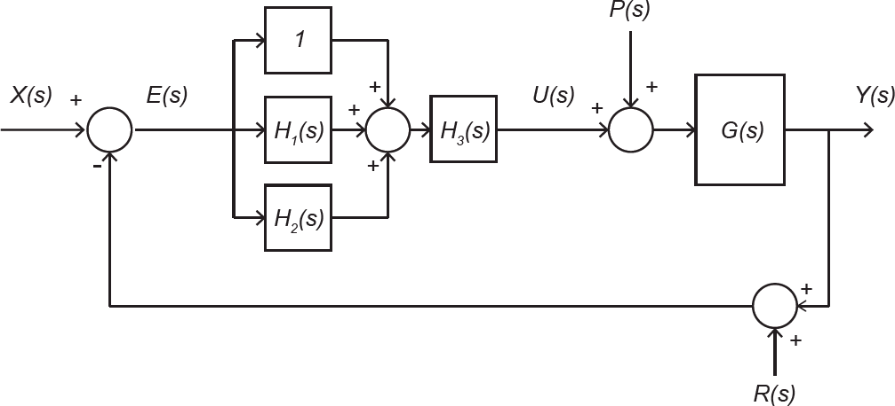

Considere o sistema de controle de um processo industrial descrito pelo diagrama de blocos apresentado na figura abaixo:
No diagrama, X(s), Y(s), E(s), U(s), P(s) e R(s) representam, respectivamente, os sinais de referência, saída, erro, ação de controle, perturbação na entrada da planta e ruído de medição. G(s) é a função de transferência da planta a ser controlada. Os demais blocos constituem o controlador, que é descrito pelas seguintes funções de transferência:
1.  = \frac{1}{\tau_1 s}) 2.
2.  = \frac{\tau_2 s}{1+\alpha \tau_2 s}) 3.
3.  = K)
em que τ1, τ2, α e Ksão as constantes não nulas sintonizadas pelo projetista do sistema de controle. Considere que, nos testes, durante o comissionamento do sistema, verificou-se que a aplicação de um sinal de referência x(t) do tipo degrau resulta em uma ação de controle u(t) com um elevado pulso imediatamente após a aplicação do degrau. Esse pulso é inadequado para o processo, pois causa fadiga precoce do atuador.
Para contornar esse problema, é necessário